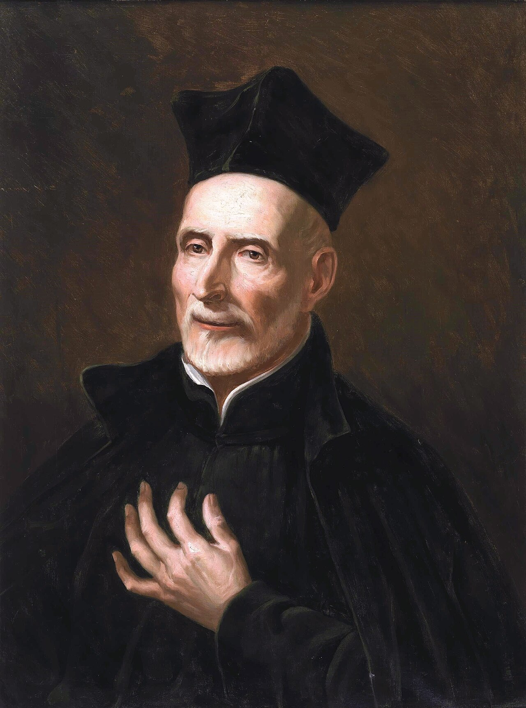

Carisma y Talentos

El Padre Ignacio Casanovas Perramont representó fielmente la esencia del carisma escolapio sintetizado en el lema de San José de Calasanz: "Piedad y Letras".
Su vida apostólica integró armónicamente la docencia con una viva sensibilidad artística y un tierno amor familiar:
- Educador Dedicado: Impartió clases en las aulas escolapias con pedagogía cercana, cultivando la educación cristiana de niños y jóvenes.
- Dotes Musicales: Fue un destacado ejecutante del piano, utilizando la música como herramienta pedagógica y de alabanza divina.
- Habilidad en Trabajos Manuales: Poseía un gran talento para la artesanía y tareas manuales aplicadas en la vida escolar.
- Profundo Amor Filial: Mantuvo siempre un tierno y constante cuidado hacia su madre viuda, a quien protegió y acompañó entrañablemente.
Esta combinación de cultura, arte, afecto familiar y profunda vida de oración hizo del Padre Ignacio un maestro respetado y querido por sus alumnos y compañeros religiosos.